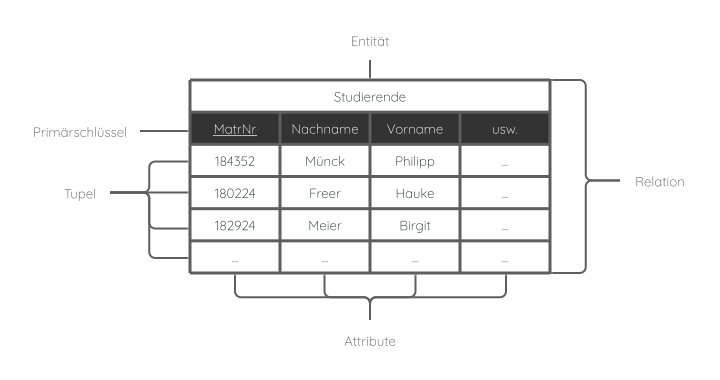

Datenmodell
Zur Datenbankimplementierung muss das ERM in das Relationale Datenmodell (auch Relationenmodell)
übergeleitet werden, welches Grundlage relationaler Datenbanken ist.

Im Relationenmodell werden Entitäten, ihre Eigenschaften und ihre Beziehungen untereinander durch das Konzept der Relation dargestellt.
Dabei beschreibt jede Relation (=Tabelle) genau eine Entität des Datenbestandes. Relationen bestehen aus Tupeln (Zeilen oder Datensätze ) und Attributen (Spalten).
Bei der Transformation des ERM in das Relationale Datenmodell sind folgende Regeln zu beachten:
- Für jede Entitätsmenge wird eine Tabelle erstellt.
- Sind zwei Entitätsmengen A und B durch eine 1:1- oder 1:n- Beziehung verbunden, dann wird der Schlüssel von B als Fremdschlüssel in A als zusätzliches Attribut eingetragen.
- Sind zwei Entitätsmengen A und B durch eine m:n-Beziehung verbunden, dann wird für diese Beziehung eine eigene Tabelle angelegt. Als Attribute werden die Schlüssel verwendet.